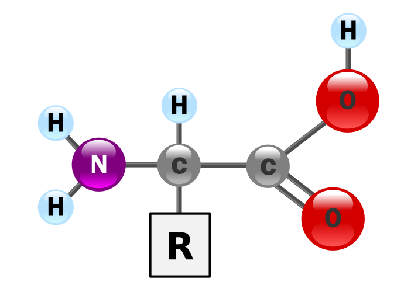
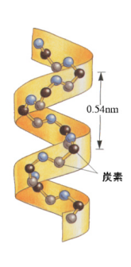
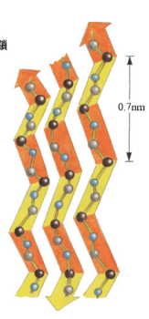

たんぱく質
タンパク質は、[a]アミノ酸が多数鎖状に連結したものである。
アミノ酸
 画像出典: wikipediaタンパク質は、アミノ酸が、H2O(化学式)を発生させながら、ぺプチド結合することで構成される。
構造式中のRが、側鎖というもので、そこにつながる分子によって、[a]二種類が出る。
構造式左側の、NH2をアミノ基、構造式右側の、COOHをカルボキシ基という。
たんぱく質の構造
タンパク質は、多数のアミノ酸が、ペプチド結合にて、連結した鎖、すなわち、"ポリペプチド"である。
- 一次構造
-
アミノ酸の配列順序そのもの。
立体構造を考えない
- 二次構造
-
アミノ酸鎖の部分的な立体構造
主に2種類ある。
αヘリックス
らせん構造の部分的立体構造
βシート
段折り状の部分的立体構造
- 三次構造
- 二次構造のαヘリックスや、βシートがたくさんつながって、より複雑になる立体構造
- 四次構造
- 複数の三次構造がさらに集まってカオスになった構造
RNA
RNAは、リボ核酸の略。
リン酸と糖(リボース)と、塩基を持つ物質である。
DNAとは異なり、1本鎖である。
主にタンパク質の合成時に働く核酸である。
RNAの持ちうる塩基
| 記号 | 物質名 |
|---|---|
| A | アデニン |
| U | ウラシル |
| C | シトシン |
| G | グアニン |
RNAとDNAの違いを整理
| DNA | RNA | |
|---|---|---|
| 名前 | デオキシリボ核酸 | リボ核酸 |
| 糖 | デオキシリボース | リボース |
| 構造 | 二重らせん | 一本鎖 |
| 塩基 | A T C G | A U C G |
DNAの情報をもとにタンパク質を合成する手順
-
- 転写
-
DNAの塩基配列が、RNAポリメラーゼ(またはRNA合成酵素)によって、mRNA前駆体に写される。
DNAのらせん構造をいったんほどいて、相補性で対応するRNA塩基を連れてきて、構成するみたい。
-
- スプライシング
-
写されたRNAの中で、必要な部分だけをつなぎ合わせて、[a]mRNAをつくる。
- 必要な部分(タンパク質の情報になる塩基配列)⇒エキソン
- いらない部分(タンパク質の情報ではない塩基配列)⇒イントロン
ここまで、核内で行われる。
- [a]が核を出て、リボソームが付着する。
-
- 翻訳
-
[b]tRNAがアミノ酸を持ってくる。
[b]が持ってきた、アミノ酸を結合させることによって、タンパク質完成。
[b]は、[a]のコドンに対応したアンチコドンというのを持っている。
情報の流れ
DNA ⇒ RNA ⇒ タンパク質
遺伝情報はこのように一方向の流れで伝達される(セントラルドグマ)
塩基がアミノ酸を指定する
タンパク質を合成するためのアミノ酸は20種類ある。
一方アミノ酸の配列順序を決定するための塩基は4つのみしかない。
よって、塩基3つの組み合わせがアミノ酸をしている。
遺伝子突然変異
何らかの理由により、塩基配列に変化が起きることを遺伝子突然変異という。
突然変異の種類には次の種類がある
| A | 置換 | 塩基の一部が置き換わる | |
| B | 失欠 | 塩基の一部が失われる | |
| C | 挿入 | 塩基の一部が割り込まれる |
一般に、AよりB, Cのほうが影響が大きい。
それは、より多くのタンパク質内のアミノ酸が変化してしまうためである。
突然変異の例
「鎌状赤血球症」が有名。
日本人での発症頻度は低いが、発展途上国では多い。
赤血球自体は一般的には円盤状だが、遺伝子の突然変異によって固い棒状の鎌状の構造をとる赤血球が時に現れる。
その赤血球は貧血の原因になりやすく、また血液の流れを悪くするなどの作用も引き起こす。